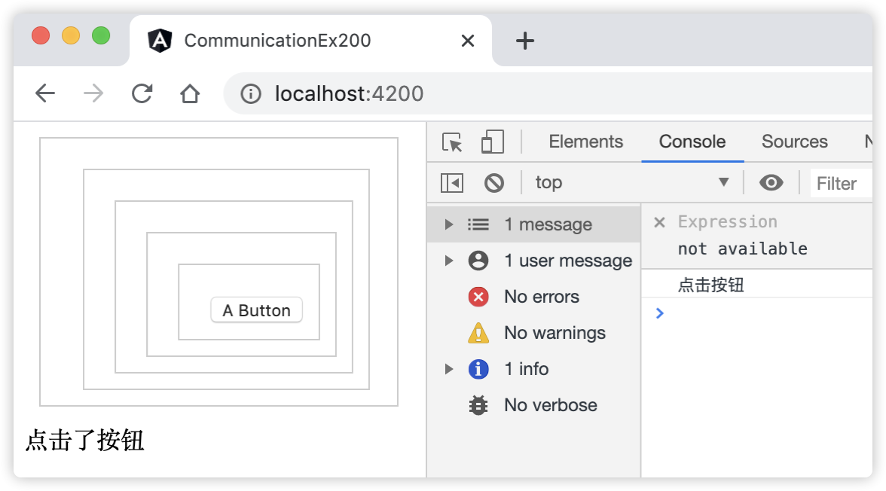

22 掌握在Angular组件间通信¶
组件间通信在Angular中是必不可少的，但是随着应用的组件逐渐的增多，功能变得越来越复杂。根据不同的场景，选择及掌握在Angular组件间通信的方式至关重要，这也是本章重点阐述的内容。
22.1 Angular组件间的通信方式有哪些¶
在Angular组件间通信的方式实则是在Angular组件之间共享数据，常见的方式主要有下面这4种：
父组件通过@Input()装饰器与子组件通信；
子组件通过@Output()装饰器与父组件通信；
通过组件的引用调用对方的属性和方法；
通过服务共享数据。
其中，通过服务共享数据又有下面这两种方式：
通过事件总线共享数据；
通过服务的可观察对象共享数据；
上面的关于父子组件间的通信方式，在本书介绍组件知识时，已经进行了详细介绍，在此仅是做个归纳。它们的详情信息，读者可以前往组件章节查阅[示例 components-ex900] 演示父组件传递数据到子组件 和 [示例 components-ex1000] 演示子组件传递数据到父组件。
下面分别介绍剩下的几种通信方式。
22.2 通过组件的引用调用对方的属性和方法¶
通过组件的引用调用对方的属性和方法指的是：传递一个A组件的引用给B组件，从而在B组件中通过引用来调用A组件的属性和方法；Angular中能实现对组件的引用，@ViewChild()装饰器就是其中之一。本书在介绍Angular模板知识时演示了使用@ViewChild()属性装饰器获取模板中的元素，这里将元素定位为组件，就变成了对组件的引用。
这里需要注意的是A组件引用B组件，只有当B组件中的属性和方法声明为非私有（private）范围时，才能被A组件调用。另外，由于@ViewChild()装饰器的特性，只有在引用方A组件的初始化生命周期在AfterViewInit之后，A组件才能访问B组件的引用，进而调用B组件的属性和方法。
下面通过示例演示通过组件的引用调用对方的属性和方法。
[示例 communication-ex100] 通过组件的引用调用对方的属性和方法
用Angular CLI构建应用程序，具体命令如下：
ng n communication-ex100 --minimal --defaults=true
启动服务，具体命令如下：
ng serve
新增子组件。使用命令
ng g c li-show新建组件类，并将文件src/app/li-show/li-show.component.ts更改为以下内容：
import { Component, OnInit } from '@angular/core'; @Component({ selector: 'app-li-show', template: ` <p> {{title}} works! </p> `, styles: [ ] }) export class LiShowComponent implements OnInit { title = 'app-li-show'; constructor() { } ngOnInit(): void { } show() { return '这是LiShowComponent组件里面的方法' } }
编辑根组件。编辑文件src/app/app.component.ts，并将其更改为以下内容：
import { Component, ViewChild, AfterViewInit } from '@angular/core'; import { LiShowComponent } from './li-show/li-show.component'; @Component({ selector: 'app-root', template: ` <app-li-show></app-li-show> `, styles: [] }) export class AppComponent implements AfterViewInit { title = 'communication-ex100'; @ViewChild(LiShowComponent, { static: false }) private liShowComponent: LiShowComponent; // 调用子组件的属性和方法 ngAfterViewInit() { console.log('在ngAfterViewInit中执行：' + this.liShowComponent.title // 调用子组件的title属性 + this.liShowComponent.show()) //调用子组件的show()方法 } }
观察应用程序页面，进入页面开发者模式，观察控制台打印信息。
在上面的示例communication-ex100中，在根组件中通过@ViewChild()装饰器引用了LiShowComponent子组件，然后在ngAfterViewInit()方法中，获取它的title属性和调用它的show()方法。
22.3 通过事件总线共享数据¶
通过事件总线共享数据可以实现任何组件之间共享数据，组件之间无需建立关联。实现它的步骤是，首先创建一个事件总线服务。然后，向总线服务发送事件，如果有任何一个订阅者监听并注册了该事件名称，那么它就会执行回调函数。
为了体现组件间无需建立关联关系，下面通过演示一个深层次的嵌套组件示例通过事件总线服务共享数据。
[示例 communication-ex200] 通过事件总线共享数据
用Angular CLI构建应用程序，具体命令如下：
ng n communication-ex200 --minimal --defaults=true
启动服务，具体命令如下：
ng serve
创建事件总线服务。使用命令
ng g s EventBus新建服务类，并将文件src/app/event-bus.service.ts更改为以下内容：
import { Injectable } from '@angular/core'; import { Subject, Subscription } from 'rxjs'; import { filter, map } from 'rxjs/operators'; // 定义的事件对象 export class EmitEvent { constructor(public name: any, public value?: any) { } } // 定义的事件类型 export enum Events { ButtonClicked, } @Injectable({ providedIn: 'root' }) export class EventBusService { constructor() { } private subject$ = new Subject(); public emit(event: EmitEvent): void { this.subject$.next(event); } public on(event: Events, action: any): Subscription { return this.subject$.pipe( filter((e: EmitEvent) => e.name === event), map((e: EmitEvent) => e.value) ).subscribe(action); // action是回调方法 } }
创建组件。使用命令
ng g c button新建组件类，并将文件src/app/button/button.component.ts更改为以下内容：
import { Component } from '@angular/core'; import { EmitEvent, EventBusService, Events } from '../event-bus.service'; @Component({ selector: 'app-button', template: ` <button (click)="onClick()"> <ng-content></ng-content> </button> `, styles: [` :host { margin: 10px; } `] }) export class ButtonComponent { constructor(private eventBusService: EventBusService) { } public onClick(): void { this.eventBusService.emit(new EmitEvent(Events.ButtonClicked, '点击按钮')); } }
创建组件。使用命令
ng g c buttonContainer新建组件类，并将文件src/app/buttonContainer/buttonContainer.component.ts更改为以下内容：
import { Component } from '@angular/core'; @Component({ selector: 'button-container', template: '<ng-content></ng-content>', styles: [` :host { padding: 10px 0 0 10px; margin: 10px; display: flex; justify-content: center; border: 1px solid #ccc; } `] }) export class ButtonContainerComponent { }
编辑根组件。编辑文件src/app/app.component.ts，并将其更改为以下内容：
import { Component } from '@angular/core'; import { EventBusService, Events } from './event-bus.service'; @Component({ selector: 'app-root', template: ` <button-container> <button-container> <button-container> <button-container> <button-container> <app-button>A Button</app-button> </button-container> </button-container> </button-container> </button-container> </button-container> {{ buttonClicked ? '点击了按钮' : null }} `, }) export class AppComponent { public buttonClicked: boolean; constructor(private eventBusService: EventBusService) { eventBusService.on(Events.ButtonClicked, (x) => { console.log(x); this.buttonClicked = true; }) } }
查看应用程序结果。打开Web浏览器并浏览到 “http://localhost:4200”，点击按钮，查看控制台，页面显示效果如图22-1所示：
图22-1 一个深层次的嵌套组件间共享数据
{kind=link}
在上面的步骤中，完成了以下内容：
在总线服务类EventBusService中，我们通过RxJs库的主题对象共享数据。注意on()方法，它返回的是一个订阅者对象，该方法提供给订阅者使用；
在ButtonComponent组件中，给按钮绑定了点击事件，同时在事件方法中调用总线服务的emit方法，发送了一个数据。EmitEvent对象接受2个参数，前一个是事件类型，后一个是具体的发送数据；
在ButtonComponent和ButtonContainerComponent组件中，样式中使用了“:host”选择器，表示选择的是当前模板中的宿主元素；
在根组件中的构造方法里面调用了总线服务的on()方法，该方法的第二个参数就是回调方法。
通过上述示例可以看出，总线服务通信方式可以贯穿在整个系统中，这种方式在实际业务中非常适用。
22.4 通过服务的可观察对象共享数据¶
通过服务的可观察对象共享数据的原理就是创建一个库存，在里面储存值。每当这个库存发生变化时，监听它的观察者就会知道消息，并执行回调。
我们分别创建一个列表组件和详情组件，点击列表项时，往库存中添加每一项的值，同时，详情组件中监听的库存的回调方法会立即被调用。下面是具体的示例讲解。
[示例 communication-ex300] 通过服务的可观察对象共享数据
用Angular CLI构建应用程序，具体命令如下：
ng n communication-ex300 --minimal --defaults=true
启动服务，具体命令如下：
ng serve
创建接口。使用命令
ng g i Article新建接口类，并将文件src/app/article.ts更改为以下内容：
export interface Article { id: number; title: string; content: string; }
创建服务类。使用命令
ng g s share新建接口类，并将文件src/app/share.service.ts更改为以下内容：
import { Injectable } from '@angular/core'; import { BehaviorSubject, Observable } from 'rxjs'; @Injectable({ providedIn: 'root' }) export class ShareService<T> { private inventorySubject$ = new BehaviorSubject<T>(null); getLatestInventory(): Observable<T> { return this.inventorySubject$.asObservable(); } addToInventory(t: T) { this.inventorySubject$.next(t); } }
创建列表组件。使用命令
ng g c ArticleList新建列表组件类，并将文件src/app/article-list/article-list.component.ts更改为以下内容：
import { Component, OnInit } from '@angular/core'; import { Article } from '../article'; import { ShareService } from '../share.service'; @Component({ selector: 'app-article-list', template: ` <ul> <li *ngFor="let item of articles" style="list-style-type:none;"> <button style='font-size:24px'> <a href="#" (click)="viewArticle(item)">{{item.title}}</a> </button> </li> </ul> `, styles: [ ] }) export class ArticleListComponent implements OnInit { articles: Array<Article> = [ { id: 1, title: "Angular", content: "Master Angular" }, { id: 1, title: "Java", content: "Master Java" }, { id: 3, title: "Node", content: "Master Node.js" }, { id: 4, title: "Python", content: "Master Python 3" }, ] constructor(private shareService: ShareService<Article>) { } ngOnInit(): void { } viewArticle(article: Article) { this.shareService.addToInventory(article); } }
创建详情组件。使用命令
ng g c ArticleDetail新建详情组件类，并将文件src/app/article.ts更改为以下内容：
import { Component, OnInit } from '@angular/core'; import { Article } from '../article'; import { ShareService } from '../share.service'; @Component({ selector: 'app-article-detail', template: ` <p> {{detail?.id}} ：{{detail?.title}}：{{detail?.content}} </p> `, styles: [ ] }) export class ArticleDetailComponent implements OnInit { detail: Article; constructor(private shareService: ShareService<Article>) { } ngOnInit(): void { this.shareService.getLatestInventory().subscribe(article => { this.detail = article; }) } }
编辑根组件。编辑文件src/app/app.component.ts，并将其更改为以下内容：
import { Component } from '@angular/core'; @Component({ selector: 'app-root', template: ` <h1 align = "center">{{title}}</h1> <div align = "center"> <app-article-list></app-article-list> <app-article-detail></app-article-detail> </div> `, styles: [ ] }) export class AppComponent { title = 'communication-ex300'; }
查看应用程序结果。打开Web浏览器并浏览到 “http://localhost:4200”，点击按钮，查看页面显示效果。
在上面的步骤中，完成了以下内容：
在ShareService服务类中，通过使用泛型参数来定义增加到库存中数据的类型，使用inventorySubject$变量表示库存。getLatestInventory()方法返回库存中的最新值，addToInventory()方法表示往库存中添加数据；
在ArticleListComponent列表组件类中，调用viewArticle()方法，往库存中添加列表项的数据；
在ArticleDetailComponent详情组件类中，订阅了库存中最新添加的数据，在详情组件初始化过程中，这时用户还没有来得及点击列表，这时，类属性detail变量的值为null，因此，在模板中调用detail变量的值时需要添加”?”操作符；
本示例中，列表组件和详情组件之间并没有建立关联关系，它们是通过服务的可观察对象共享数据。
22.5 小结¶
本章介绍了如何在Angular组件间进行通信，介绍了4种常见的通信方式，通过示例分别对每种方式进行了详细的演示，这些方式在实际应用中使用得非常普遍。